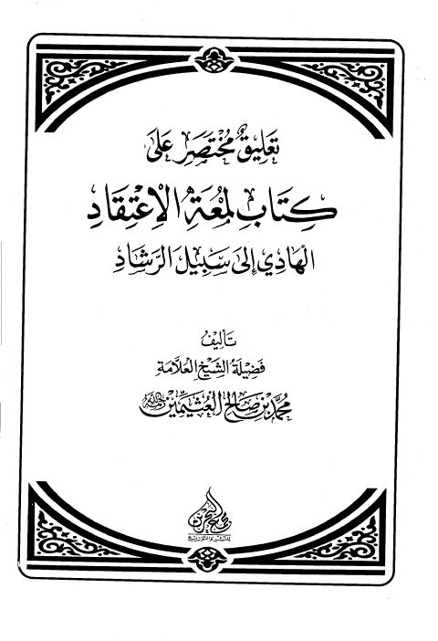
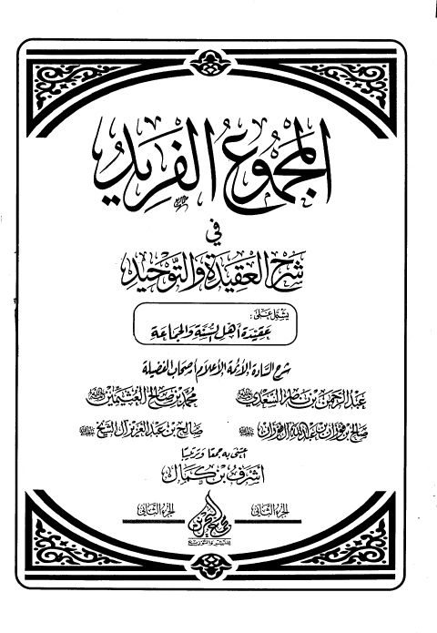

تعليق مختصر على كتاب لمعة الاعتقاد الهادي إلى سبيل الرشاد - مجمع البحرين تعليق مختصر على كتاب لمعة الاعتقاد الهادي إلى سبيل الرشاد - مجمع البحرين محمد بن صالح العثيمين
شرح القواعد المثلى في صفات الله وأسمائه الحسنى- مجمع البحرين شرح القواعد المثلى في صفات الله وأسمائه الحسنى- مجمع البحرين محمد بن صالح العثيمين